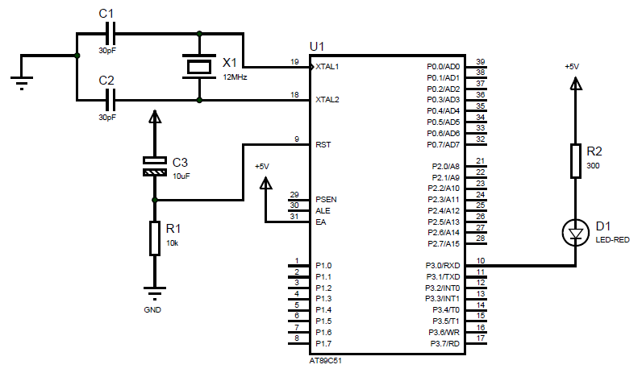

Keil基本操作
文/阿丘 Date:
一、概述
工欲善其事必先利其器。Keil uVersion 4.0（后文简称为Keil 4.0）是单片机程序开发的集成开发环境（IDE），集成了C编译器、宏汇编、连接器、库管理和一个功能强大的仿真调试器。
本节以点亮一个LED为例，演示如何通过Keil新建工程、添加源文件、编译等基本操作。
二、Keil基本操作——以点亮一个LED项目为例
本项目通过8051单片机的P2.0管脚控制一个红色LED， 支持两种控制模式：长亮模式和闪烁模式。电路图如下图所示，由图可知，P3.0输出低电平时，LED点亮；输出低电平时，LED熄灭。

项目程序由一个.c和一个.h组成，其中，LedCtrl.c为主程序，演示LED的两种控制模式；led.h为LED控制实现，定义了长亮函数lit(bit flag)、闪烁函数flash(unsigned int interval)和软件延时函数delayMS(unsigned int ms)。
下面演示基于Keil完成本项目的开发过程。
1. 新建工程。
（1） 运行Keil uVision4。
（2）选择菜单【Project>New μVersion Project】，打开Create New Project对话框。

（3）设置工程保存路径和工程名称。注意，建议一个工程对应一个文件夹，方便管理。

（4）设置单片机型号。 在Select a CPU Data Base File对话框选择Generic Data Base，然后弹出的对话框中选择ATMEL>AT89C51，单击【OK】按钮。


（5）单击【否 】按钮，选择不复制8051启动代码到工作文件。

到此，空白工程已经建好，如下图所示。

- 编写代码
（1）选择菜单【File>New】（快捷键Ctrl+N）新建一个空白文件，则进入文件编辑状态。
（2）选择菜单【File>Save As】（快捷键Ctrl+S）将新建文件存储到工程目录LEDCtrl下，命名为led.h。
（3）重复步骤（1）~（2），新建文件LedCtrl .c，存储路径为工程目录LEDCtrl 下。
（4）编写led.h，代码如下：
#include <reg51.h> //导入8051特殊功能寄存器定义及其可寻址位定义
sbit led_red = P3^0; //定义led_red变量控制P3.0引脚:
//输出0时（低电平），LED亮，输出1时，LED灭。
/******************************
*函数：LED_lit
*功能：点亮/熄灭led_red
*参数：bit flag: flag = 1, 点亮；flag = 0，熄灭
*返回：无
*****************************/
void LED_lit(bit flag)
{
led_red = ~flag; //不用if语句，控制输出与flag为相反，直接取反操作即可。
}
/******************************
*函数：delayMS
*功能：ms级延时函数@12MHz晶振
*参数：unsigned int: 延时时间，单位ms
*返回：无
*****************************/
void LED_delayMS(unsigned int ms)
{
unsigned int i,j;
for(i=0;i<ms;i++)
for(j=0;j<150;j++);
}
/******************************
*函数：LED_flash
*功能：led_red闪烁:亮->灭>亮>灭...
*参数：unsigned int: 闪烁间隔，单位ms
*返回：无
*****************************/
void LED_flash(unsigned int interval)
{
lit(1);
delayMS(interval);
lit(0);
delayMS(interval);
}
（5）编写LEDCtrl.c，代码如下：
#include "led.h"
/******************************
*函数：main
*功能：程序入口，演示：1. LED长亮10s； 2. LED闪烁10次.
*参数：无
*返回：无
*****************************/
void main()
{
unsigned char flash_times = 10;
unsigned char i;
while(1)
{
LED_lit(1);
LED_delayMS(10000);
for(i=0;i<flash_times;i++)
{
LED_flash(1000);
}
}
}
（6）添加LEDCtrl.c和led.h到当前工程。
a. 在工程浏览区双击Target 1下的Source Group1，打开添加对话框。

b. 再添加对话框中先选择文件类型（.h或.c），再双击要添加的文件即可。

添加的文件会出现在工程资源浏览区下，如下图所示。

- 编译程序。
（1）设置输出.hex选项，输出目录默认为工程路径的根目录。
选择菜单【Project>Options for Target 'Target1'...】（快捷键ALT+F7或快捷图标 ），在弹出的对话框的Output页签中勾选Create Hex File选项，单击【OK 】按钮。。
），在弹出的对话框的Output页签中勾选Create Hex File选项，单击【OK 】按钮。。
），在弹出的对话框的Output页签中勾选Create Hex File选项，单击【OK 】按钮。。
（2）单击工具栏的快捷图标 或按快捷键F7，编译程序。
或按快捷键F7，编译程序。
或按快捷键F7，编译程序。在编译信息输出区域显示编译结果，如下图所示。

若有错误（error），双击错误提示即可。
如将LEDCtrl.c里的LED_lit函数调用改为lit，则错误提示如下，表示lit函数缺少原型，即没有定义ing。

至此，整个工程从创建到编译已经介绍完成，以上就是Keil最基本的操作。
至于程序调试功能，属于高级功能，本文不作介绍。